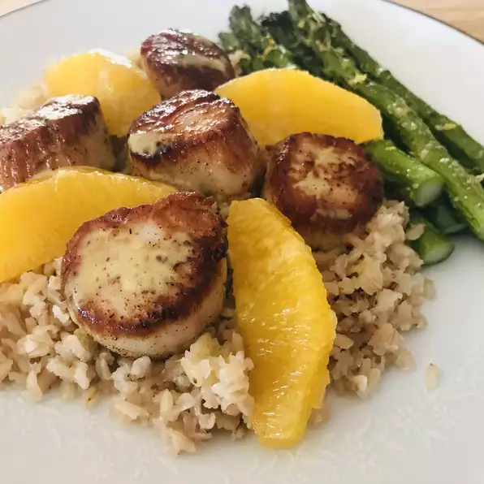

Back
Seared Scallops with Jalapeno Vinaigrette

Description
This is a keeper! One of the best recipes I have made in a long, long time. Perfect as is - no changes are needed at all. Make sure your scallops are really dry - season them well and into a screaming hot pan. Don't move them until you flip them. You want to get them good and crispy on the outside. So delicious! Try them - you won't regret making this recipe! Enjoy!
Ingredients
- 1 large jalapeno pepper, seeded and membranes removed
- ¼ cup rice vinegar
- ¼ cup olive oil
- ¼ teaspoon Dijon mustard
- salt and freshly ground black pepper to taste
- 1 tablespoon vegetable oil
- 12 large fresh sea scallops
- 1 pinch sea salt
- 1 pinch cayenne pepper
- 2 oranges, peeled and cut in between sections as segments
Steps
- 1. Place jalapeno, rice vinegar, olive oil, and Dijon mustard in a blender. Puree on high until mixture is completely liquefied, 1 to 2 minutes. Season with salt and black pepper to taste.
- 2. Season scallops with sea salt and cayenne pepper. Heat vegetable oil in a skillet over high heat. Place scallops in skillet and cook until browned, 2 to 3 minutes per side. Transfer to a plate. Garnish scallops with orange segments and drizzle jalapeno vinaigrette over the top.